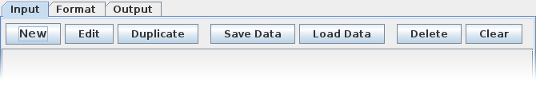
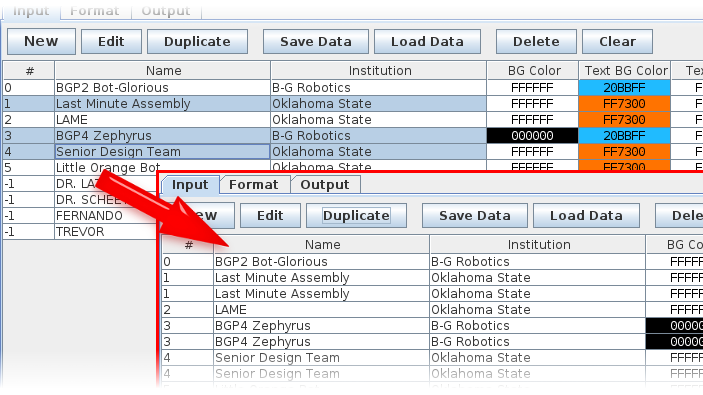

The row of buttons on the top of the input tab allows you to manipulate the list of badge entries that will be processed:

The Edit function allows you to modify the attributes of the badge entry. Refer to the Data Input help topic for information on what each data field is used for.
The Duplicate function will duplicate each selected entry as demonstrated below:

The entries with numbers 1, 3, and 4 are each duplicated once. The entries can further be duplicated by re-selecting them.
The data entries can be saved into a CSV-formatted file. Click Save Data to bring up a file browser dialog. Choose a directory and a file name. If the file name is valid and the directory is accessible, the program will save a CSV file that contains the data entries and PNG images of badge pictures in the same directory.
The saved data can be loaded by clicking on the Load Data button and browsing for the CSV file. The program will also load all the PNG files referenced by the badge data file. To backup saved badge data, make sure that you copy the CSV file and the PNG files in the directory, otherwise the picture data will be lost!
The Delete function will remove badge entries that are currently selected. A confirmation dialog will ask you to make sure that the deletion is deliberate. The Clear function will remove all entries from the list. This function will also ask for a confirmation.
Delete and Clear actions can not be undone!
Next topics: Create Badges, Create Certificates.